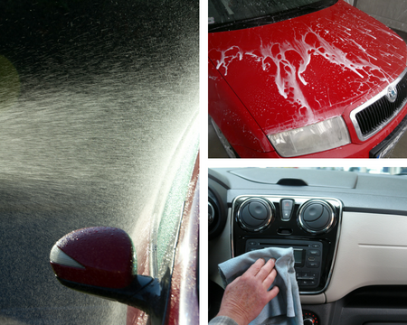

Auto Clean Services
Passenger Car
We perform professional washing for general passenger vehicle from sedan, taxi , MPVs and SUVs. All our car wash are done manually to prevent accidental damage due to machineries.
Commerical Transport Vehicle
We are able to perform thorough vehicle washing for commerical vehicle such as buses, passenger van and travel coaches. Please book an appointment with us wither by phone or via the web site.
Hygiene Cleansing
We are licensed hygiene cleansing provider for vehicle. We can perform the cleansing service that meet the rigor of medical standard. Please book an appointment with us wither by phone or via the web site.
Construction Vehicle
Our large space allows us to do washing even for construction vehicles. Lorry, Bulldozer, ... etc are not a problem for us. Please book an appointment with us wither by phone or via the web site.
Onsite Cleansing Service
We understand your busy schedule and we can provide door step service for car washing. Our mobile car washing service is one of the higly acclaimed in town. The mobile washing vehicle is equipped with state of the art car washing facility. Our vehicle has a 100 litres water tank to facilite that washing even in area when there is no water supply.